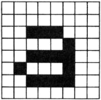
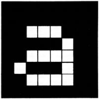
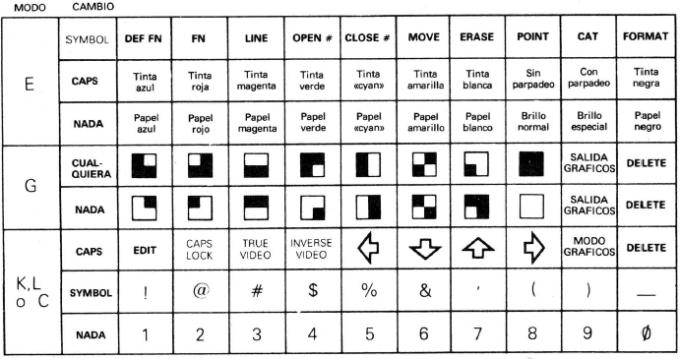

Manual de Basic Spectrum 48k. |
|
Capítulo 16
ColoresResumen
Ejecute este programa:
Muestra los ocho colores (incluyendo blanco y negro) y los dos niveles de brillo que el ZX Spectrum puede producir en un televisor en color (si su televisión es de blanco y negro, verá diversas tonalidades de grises). Damos a continuación una lista de colores para referencia; se escriben también con las teclas de números adecuadas.
En una televisión de blanco y negro, estos números están en orden de brillo o luminosidad. Para utilizar adecuadamente estos colores, necesita conocer un poco sobre cómo se dispone la imagen. La imagen está dividida en 768 (24 líneas de 32) posiciones en donde pueden imprimirse caracteres y cada carácter se imprime como un cuadrado de 8x8 puntos como para a. Esto debe recordarlo de cuando se trató de los gráficos definidos por el usuario en el capítulo 16, en donde teníamos "ceros" para los puntos blancos y "unos" para los puntos negros. 
La posición de carácter se ha asociado también con dos colores: la tinta, o color de primer plano, que es el color para los puntos negros en nuestro cuadrado y el papel, o color de fondo, que se utiliza para los puntos blancos. Para comenzar, cada posición tiene tinta negra y papel blanco, por lo que la escritura aparece como negro sobre blanco. La posición de carácter tiene también un brillo (brillo normal o especial) y una característica de parpadeo o sin parpadeo (este parpadeo se consigue basculando los colores de tinta y de papel). Todo ello se puede codificar en números, de modo que una posición de carácter tiene:
Tenga presente que puesto que los colores de tinta y de papel cubren una posición de carácter completa, posiblemente no pueda tener más de dos colores en un bloque dado de 64 puntos. Lo mismo es válido para el número de parpadeo y brillo; se refieren a la posición de carácter completa y no a puntos individuales. Los colores, brillo y número de parpadeo en una posición dada se denominan atributos. Cuando imprime algo en la pantalla, cambia la configuración de puntos en esa posicion; es menos obvio, pero no obstante cierto, que cambia también los atributos en esa posición. Al comenzar no lo observará porque todo se imprime con tinta negra sobre papel blanco (y brillo normal y sin parpadeo), pero puede variarlo con las sentencias INK, PAPER, BRIGHT y FLASH. Pruebe PAPER 5
y luego, imprima algunas cosas. Todo aparecerá sobre papel "cyan" (azul-verdoso pálido), porque a medida que se imprimen, los colores del papel, en las posiciones que ocupan, se ponen a "cyan" (que tiene código 5). Las demás operan de la misma forma, por lo que después de
cualquier impresión establecerá el atributo correspondiente en todas las posiciones de carácter que utilice. Pruébelo con algunos ejemplos. Ahora debe ser capaz de ver cómo operaba el programa al principio (recuerde que un espacio es un carácter que tiene el mismo color de tinta (INK) y de papel (PAPER)). Hay algunos números más que puede utilizar en estas sentencias que tienen efectos menos directos. El número 8 puede utilizarse en las cuatro sentencias y significa "transparente" en el sentido de que el anterior atributo se transparenta. Supongamos, por ejemplo, que introduce PAPER 8
entonces, ninguna posición de carácter tendrá su color de papel puesto a 8, porque no existe ningún color correspondiente; lo que sucede es que cuando se imprime una posición, su color de papel se deja el mismo que había antes. INK 8, BRIGHT 8 y FLASH 8 operan de la misma forma para los demás atributos. El número 9 sólo puede utilizarse con PAPER e INK y significa "contraste". El color (tinta o papel) que utiliza con uno de ellos ha de estar en contraste con el del otro, de modo que sea blanco si el otro es oscuro (negro, azul, rojo o magenta) y negro si el otro es claro (verde, cyan, amarilo o blanco). Pruebe lo anterior tecleando: INK 9: FOR c = 0 TO 7: PAPER c: PRINT c: NEXT c
Una visualización más destacada de su potencia ha de ejecutar el programa al principio para obtener bandas coloreadas y luego introduciendo: INK 9: PAPER 8: PRINT AT 0,0;: FOR n = 1 TO 1000: PRINT n;: NEXT n
En este caso, el color de la tinta siempre estará en contraste con el color del papel anterior en cada posición. La televisión en color se basa en el hecho bastante curioso de que el ojo humano sólo puede ver realmente tres colores, que son los primarios: azul, rojo y verde. Los demás colores son mezclas de ellos. Por ejemplo, el magenta se consigue mezclando azul con rojo (que es la razón de que su código 3 sea la suma de los códigos correspondientes a los colores azul y rojo). Para ver cómo los ocho colores se acoplan juntos, imagine tres proyectores rectangulares, con colores azul, rojo y verde, que inciden en un lugar no coincidente en un recinto de papel blanco en la oscuridad. En donde se solapen verá mezclas de colores, como se indica por el siguiente programa (observe que los espacios de tinta se obtienen con el empleo de una u otra tecla SHIFT con 8, cuando se está en el modo G).
Hay una función denominada ATTR que averigua cuáles son los atributos que están en una posición dada en la pantalla. Se trata de una función bastante complicada, por lo que se ha relegado al final de este capítulo. Hay otras dos sentencias, INVERSE Y OVER, que no controlan los atributos, sino las configuraciones de puntos que se imprimen en la pantalla. Utilizan los números 0 para desactivación y 1 para activación, en la misma forma que para el parpadeo (FLASH) o para el brillo (BRIGHT), pero ellas no son las únicas posibilidades. Si hace INVERSE 1, entonces, las configuraciones de puntos impresas serán las inversas de su forma habitual: los puntos de papel serán sustituidos por puntos de tinta y viceversa. Así, a se imprimiría como 
Si (como en la condición de encendido) tenemos tinta negra y papel blanco, entonces, esta a aparecerá como blanco sobre negro (pero seguimos teniendo tinta negra y papel blanco en esa posición de carácter). Son los puntos los que han cambiado. La sentencia OVER 1
pone en acción una clase especial de sobreimpresión. En condiciones normales, cuando algo se escribe en una posición de carácter, borra completamente lo que había antes en la misma; pero, ahora, el carácter nuevo simplemente se añadirá en la parte superior del anterior (véase Ejercicio 3). Ello puede ser especialmente útil para escribir caracteres compuestos, como letras con acentos, como es el caso del siguiente programa para imprimir letras alemanas góticas (una "o" con una diéresis sobre ella. (Haga NEW primero).
(observe el carácter de control CHR$ 8 que hace retroceder un espacio). Hay otra forma de utilizar INK, PAPER, etc., que probablemente encontrará de más utilidad que como sentencias. Puede ponerles como elementos de información en una sentencia PRINT (seguidos por ;) y, entonces, hacen exactamente lo mismo que si se hubieran empleado como sentencias, con la salvedad de que su efecto sólo es temporal: duran hasta el final de la sentencia PRINT que las contiene. Así, si teclea. PRINT PAPER 6; "x";: PRINT "y"
entonces, solamente la x estará en amarillo. INK y el resto, cuando se utilizan como sentencias, no afectan a los colores de la parte inferior de la pantalla, en donde se introducen los comandos y los datos de INPUT. La parte más baja de la pantalla utiliza el color del contorno para su color de papel y el código 9 de contraste para su color de tinta, tiene desactivado el parpadeo y todo con brillo normal. Puede cambiar el color del contorno a cualquiera de los ocho colores normales (excepto 8 ó 9) con el empleo de la sentencia BORDER color
Cuando hace una entrada de datos, se sigue esta norma de empleo de tinta de contraste en papel coloreado en el contorno; pero puede cambiar el color de los epígrafes escritos por el ordenador utilizando los elementos de INK y PAPER (y así sucesivamente) en la sentencia INPUT, lo mismo que lo haría en una sentencia PRINT. Su efecto dura bien hasta el final de la sentencia o bien hasta que se tecleen algunos datos en INPUT, lo que suceda primero. Pruebe: INPUT FLASH 1; INK 1; "Cuál es su número?"; n
Hay otra forma de cambiar los colores con el empleo de caracteres de control (de manera bastante similar a la utilizada con los caracteres de control para AT y TAB en el capitulo 15.
Cada uno de ellos va seguido por un carácter que indica un color mediante su código; así, por ejemplo: PRINT CHR$ 16 + CHR$9; ...
tiene el mismo efecto que: PRINT INK 9; ...
De todos modos, no se habría molestado en utilizar estos caracteres de control porque habría preferido emplear los elementos de color. Sin embargo, algo de gran utilidad que puede hacer con ellos es ponerles en programas, de modo que las partes diferentes que se incluyen sean objeto de listado en colores distintos, para separarlos entre sí o incluso para darles un aspecto más atractivo. Debe ponerlos después del número de línea o se perderán. Para incluirlos en el programa, ha de introducirlos por el teclado, principalmente utilizando el modo extendido con los dígitos. Los dígitos 0 a 7 establecen el color correspondiente (de tinta si se pulsa también CAPS SHIFT, de papel si no se pulsa). Más precisamente, si está en el modo E y pulsa un dígito (por ejemplo, 6 para amarillo; de cualquier modo, ha de estar entre 0 y 7, nunca 8 ó 9), entonces, se insertan dos caracteres: primero, CHR$ 17 para papel y luego, CHR$ 6 que significa "ponerlo en amarillo". Si hubiera estado pulsando CAPS SHIFT cuando pulsó el dígito, hubiera conseguido CHR$ 16 que significa "poner color de tinta" en lugar de CHR$ 17. Puesto que estos son dos caracteres con los que puede obtener algunos efectos singulares cuando los borre, debe pulsar DELETE dos veces. Después de la primera pulsación conseguirá, con frecuencia, un signo de interrogación o aparecerán cosas todavía más singulares. No se preocupe, le bastará con pulsar DELETE otra vez. y pueden comportarse también extrañamente mientras el cursor se esté desplazando más allá de los caracteres de control. Todavía en el modo extendido:
Hay un par más en el modo ordinario (L):
Para resumir, damos a continuación una descripción completa de la fila superior en el teclado: 
La función ATTR tiene la forma ATTR (línea, columna)
Sus dos argumentos son los números de línea y de columna que utilizaría en un elemento AT y su resultado es un número que indica los colores y así sucesivamente en la posición de carácter correspondiente en la pantalla de televisión. Puede utilizarlo tan libremente en expresiones como pueda hacerlo con cualquier otra función. El número resultante es la suma de otros cuatro números como sigue: 128 si la posición de carácter está parpadeando, 0 si no parpadea 64 si la posición de carácter es brillante, 0 si es normal 8 * código para el color del papel número correspondiente al color de la tinta. Por ejemplo, si la posición de carácter está parpadeando y tiene brillo normal con papel amarillo y tinta azul, entonces, los cuatro números que hemos de sumar son 128, 0, 8 * 6 ( = 48) y 1, lo que hace un total de 177. Pruebe lo anterior con: PRINT AT 0,0; FLASH 1; PAPER 6; INK 1; " "; ATTR (0,0)
Ejercicios
|
Manual de Basic Spectrum 48k. |